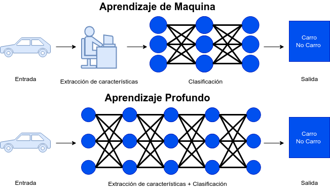
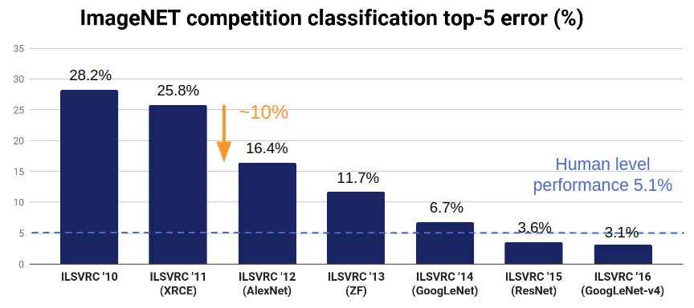
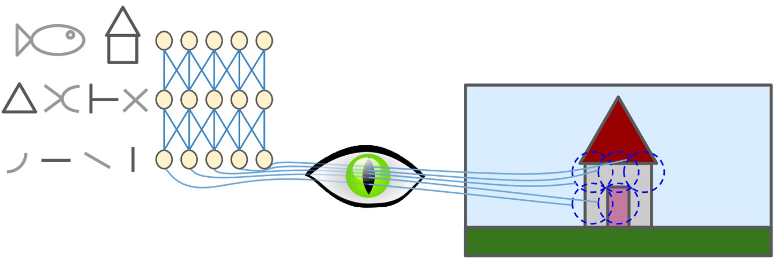
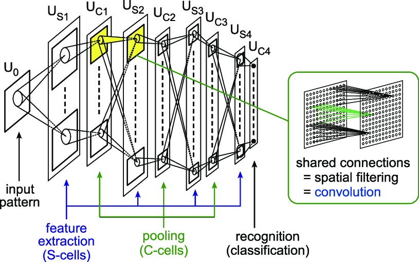
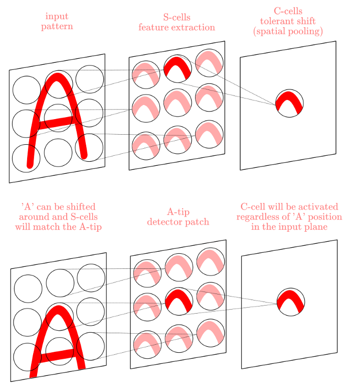
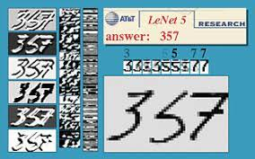

Teoría de Aprendizaje de Máquina
9 · Reducción
La maldición de la dimensión, con números
- El volumen escapa hacia los bordes: en un hipercubo de 10 dimensiones, una cáscara que ocupa apenas el 10 % de cada lado ya se lleva el 89 % del volumen. En 20 dimensiones, el 99 %. El «centro» queda vacío.
- Las distancias se igualan: con muchas dimensiones, la distancia al vecino más cercano y al más lejano se vuelven casi iguales. «Cercano» deja de significar algo.
- Consecuencia directa: KNN, K-means, DBSCAN y SVM con RBF se degradan — todos dependen de que las distancias discriminen.
- El dato que asusta: para mantener la misma densidad de muestreo, pasar de 1 a 10 dimensiones con 10 puntos por eje requiere 10¹⁰ observaciones.
- La buena noticia: los datos reales rara vez ocupan todo ese espacio. Suelen vivir sobre una superficie de dimensión mucho menor — y eso es lo que estos métodos aprovechan.
La analogía
Los mismos 1000 puntos que en un plano se tocan, en 50 dimensiones quedan aislados. Agregar un eje no agrega datos: agrega vacío. Es pasar de una caja de zapatos a un hangar sin traer una sola pelota más.
La matemática
\[ \frac{V_{\text{cáscara}}}{V_{\text{cubo}}} = 1-(1-2\varepsilon)^{d} \]
\[ \frac{d_{\max}-d_{\min}}{d_{\min}} \longrightarrow 0 \quad (d \to \infty) \]
Con una cáscara del 10 % de cada lado (\(\varepsilon = 0{,}1\)): en \(d=10\) se lleva el 89 % del volumen; en \(d=20\), el 99 %. La segunda fórmula es la que duele: si todas las distancias se parecen, «vecino» deja de significar algo.
En scikit-learn
No hay estimador acá: hay una advertencia. Todo lo que mide distancias se degrada — KNeighborsClassifier, KMeans, DBSCAN, SVC(kernel="rbf"). Este módulo existe por esta fórmula.
10 · Reducción
PCA: rotar hacia donde hay varianza
- Qué hace exactamente: encuentra un nuevo sistema de ejes donde el primero apunta hacia la dirección de máxima varianza, el segundo hacia la siguiente, y todos son perpendiculares entre sí.
- No selecciona variables, las combina: cada componente es una mezcla lineal de todas las originales. Por eso se pierde interpretabilidad directa.
- Es una rotación, no una deformación: las distancias globales se preservan. Lo que se pierde es solo lo que descartás al quedarte con pocas componentes.
- Obligatorio escalar antes: PCA maximiza varianza, y la varianza depende de las unidades. Sin escalar, la variable medida en números grandes se lleva la primera componente entera.
- Su límite: solo captura estructura lineal. Si los datos se enrollan sobre una superficie curva, PCA la aplasta en vez de desenrollarla.
La analogía
La sombra. Girá una silla frente a una lámpara: de frente su sombra es una mancha sin forma; de costado se reconoce al instante. PCA busca exactamente ese giro — la proyección en la que el objeto se sigue distinguiendo.
La matemática
\[ \max_{\lVert w\rVert = 1}\; w^{\top}\Sigma w \qquad\Longrightarrow\qquad \Sigma w = \lambda w \]
Los ejes nuevos son los autovectores de la matriz de covarianza, y cada \(\lambda\) es la varianza que ese eje captura. En la práctica no se diagonaliza \(\Sigma\): se hace la descomposición \(X = UDV^{\top}\), que es más estable.
En scikit-learn
PCA(n_components) → .explained_variance_ratio_ y .components_. Con StandardScaler delante en el Pipeline: PCA maximiza varianza, y la varianza tiene unidades.
11 · Reducción
Cuántas componentes conservar
- Varianza explicada: cada componente aporta una fracción de la varianza total. Ordenadas de mayor a menor, siempre.
- Varianza acumulada: la curva que suma esas fracciones. El criterio habitual es cortar en 90 % o 95 % — pero es una convención, no una ley.
- El codo en el diagrama de sedimentación: donde la caída se aplana, las componentes que siguen aportan principalmente ruido.
- Si el objetivo es visualizar, la respuesta es 2 o 3 y no hay discusión. Ahí conviene reportar cuánta varianza quedó afuera para no sobreinterpretar el dibujo.
- Si el objetivo es alimentar un modelo, el número de componentes es un hiperparámetro más: elegilo con validación cruzada, no con una regla fija.
La analogía
Hacer la valija. La pregunta no es «cuánto entra» sino «para qué viaje». Para mirar una foto alcanzan 2 componentes; para alimentar un modelo, las que elija la validación cruzada.
La matemática
\[ \frac{\sum_{i=1}^{k}\lambda_i}{\sum_{i=1}^{p}\lambda_i} \;\ge\; 0{,}90 \]
Son los mismos \(\lambda\) del slide 17, ordenados de mayor a menor. El diagrama de sedimentación no es más que graficarlos: el codo es donde los \(\lambda\) que siguen ya son ruido.
En scikit-learn
PCA(n_components=0.90) acepta la fracción directamente. Si va a alimentar un modelo, tratalo como un hiperparámetro más dentro de GridSearchCV.
12 · Reducción
Kernel PCA: cuando lo lineal no alcanza
- El caso que rompe PCA: el rollo suizo. Los datos viven sobre una superficie enrollada en 3D. PCA la aplasta y mezcla puntos que estaban en extremos opuestos del rollo.
- La solución: aplicar PCA en un espacio de mayor dimensión mediante un kernel — el mismo truco que reaparece en el módulo 4 (SVR, Kernel Ridge, procesos gaussianos).
- El kernel es la decisión importante: RBF, polinomial o sigmoide cambian por completo el resultado. No hay uno correcto por omisión.
-
Cómo elegir sus hiperparámetros sin etiquetas:
mediante error de reconstrucción, o metiendo kPCA dentro de un
pipeline supervisado y buscando con
GridSearchCV. - El costo: requiere la matriz kernel de n × n. Con muchos datos deja de ser viable, y ahí aparecen t-SNE y UMAP.
La analogía
Desenrollar el rollo, no aplastarlo. PCA lineal es pasarle una plancha por encima al rollo suizo: los dos extremos terminan pegados. El kernel primero lo estira y después mira.
La matemática
\[ \tilde K = K - \mathbf{1}_n K - K\mathbf{1}_n + \mathbf{1}_n K \mathbf{1}_n, \qquad \tilde K\,u = \lambda\,u \]
En vez de diagonalizar la covarianza se diagonaliza la matriz de kernel centrada. Las coordenadas \(\varphi(x)\) no aparecen nunca: es el mismo truco que en el módulo 4 sostiene a SVR, Kernel Ridge y los procesos gaussianos.
En scikit-learn
KernelPCA(kernel="rbf", gamma, fit_inverse_transform=True). Ese último argumento habilita el error de reconstrucción, que es cómo se eligen los hiperparámetros sin etiquetas.
13 · Reducción
t-SNE: hermoso y fácil de malinterpretar
- Qué preserva: la vecindad local. Si dos puntos eran vecinos en el espacio original, quedan cerca en el mapa. Es excelente para ver grupos.
- Lo que NO significa el tamaño de un grupo: nada. t-SNE expande las zonas densas y comprime las dispersas. Un grupo grande en el dibujo puede tener pocos puntos.
- Lo que NO significa la distancia entre grupos: nada. Dos grupos lejanos en el mapa pueden estar contiguos en el espacio real. Las distancias globales no se preservan.
- La perplexity cambia el resultado: valores bajos fragmentan, altos funden. Hay que probar varios antes de concluir cualquier cosa.
- Es una herramienta de exploración, no de medición. No lo uses como preprocesamiento para un modelo, y nunca ajustes t-SNE sobre entrenamiento y prueba juntos.
La analogía
Un mapa de amistades, no un mapa geográfico. Te dice quién se junta con quién. Preguntarle a qué distancia está un grupo de otro es como preguntarle a una red social cuántos kilómetros hay entre dos personas.
La matemática
\[ \mathrm{KL}(P \Vert Q) = \sum_{i \neq j} p_{ij}\,\log\frac{p_{ij}}{q_{ij}} \]
\(p_{ij}\) es la vecindad en el espacio original (gaussiana); \(q_{ij}\), la del mapa (t de Student, de colas pesadas). Esa asimetría lo explica todo: KL castiga fuerte separar lo que estaba junto y casi no castiga juntar lo que estaba lejos. Por eso lo local sobrevive y lo global no.
En scikit-learn
TSNE(perplexity, learning_rate="auto", init="pca"). No tiene .transform(): no puede ir en un Pipeline predictivo ni aplicarse a datos nuevos.
14 · Reducción
UMAP: lo que mejora sobre t-SNE
- Preserva algo de estructura global: a diferencia de t-SNE, las distancias entre grupos en UMAP conservan cierta relación con las originales. Cierta — no toda.
- Es mucho más rápido y escala a cientos de miles de puntos, donde t-SNE se vuelve impracticable.
-
Puede transformar datos nuevos: tiene
transform(). Eso lo hace utilizable como preprocesamiento real dentro de un pipeline, cosa que t-SNE no permite. -
Sus dos diales:
n_neighborsregula el equilibrio entre estructura local y global;min_distcontrola cuán apretados se dibujan los grupos. - Comparte la advertencia principal: sigue siendo una proyección no lineal. Antes de afirmar que dos grupos están «lejos», verificalo en el espacio original.
La analogía
Si t-SNE dibuja quién es amigo de quién, UMAP además intenta respetar qué tan lejos vive cada barrio. Sigue siendo un mapa social, pero con algo de geografía.
La matemática
\[ \min \sum_{(i,j)} w_{ij}\log\frac{w_{ij}}{v_{ij}} + (1-w_{ij})\log\frac{1-w_{ij}}{1-v_{ij}} \]
Entropía cruzada entre el grafo difuso de vecinos en alta dimensión (\(w\)) y en baja (\(v\)). El segundo término es el que t-SNE no tiene: penaliza juntar lo que estaba separado, y es exactamente lo que preserva algo de estructura global.
En scikit-learn
No está en scikit-learn: es umap-learn, con API compatible y —a diferencia de t-SNE— .transform() de verdad. Diales: n_neighbors (local ↔ global) y min_dist.
15 · Conglomerados
Sin etiquetas: nadie te dice si acertaste
- El cambio de régimen: hasta acá había una respuesta correcta contra la cual medirse. En agrupamiento no la hay. No existe el «error de prueba».
- Qué se busca: estructura. Grupos de observaciones más parecidas entre sí que con el resto — pero «parecido» lo definís vos al elegir la distancia.
- Para qué sirve de verdad: segmentar clientes, detectar regímenes de operación, comprimir, y sobre todo explorar antes de decidir qué modelar.
- El riesgo permanente: todo algoritmo devuelve grupos, incluso sobre ruido puro. Que el algoritmo corra no significa que los grupos existan.
- La validación siempre termina siendo externa: ¿los grupos se distinguen en variables que no usaste para agrupar? ¿Le sirven a alguien que conoce el dominio?
La analogía
Ordenar una biblioteca sin catálogo. Por color, por tamaño, por idioma o por tema: los cuatro son ordenamientos válidos. Cuál sirve depende de quién va a buscar el libro.
La matemática
\[ \text{supervisado: } \min_{f}\sum_i L\big(y_i, f(x_i)\big) \qquad \text{no supervisado: } \min_{C} J(C, X) \]
Mirá qué desapareció: la \(y\). Sin ella el objetivo deja de venir dado por los datos y pasa a venir dado por vos — elegís \(J\) y elegís la distancia. Dos elecciones distintas producen dos verdades distintas, y ninguna es «la correcta».
En scikit-learn
.fit(X) sin y, y fit_predict(X) devuelve las etiquetas. Fijate que no hay .score() contra una verdad: no existe.
16 · Conglomerados
K-means y su supuesto oculto
- El algoritmo en dos pasos que se repiten: asignar cada punto al centroide más cercano, recalcular los centroides como promedio de sus puntos. Hasta que nada cambie.
- Qué minimiza: la inercia — suma de distancias al cuadrado de cada punto a su centroide. Converge siempre, pero a un mínimo local.
- El supuesto que nadie enuncia: al usar distancia euclidiana a un centro, K-means solo puede encontrar grupos esféricos, de tamaño similar y densidad parecida.
- Qué pasa si no se cumple: con grupos alargados o en forma de luna, K-means los parte por la mitad. No falla con un error: devuelve una respuesta incorrecta con total aplomo.
-
La inicialización importa: por eso existe
k-means++y por eso se corre varias veces (n_init) y se elige la mejor inercia.
La analogía
Repartir antenas en una ciudad para que nadie quede lejos de la suya. Funciona si los barrios son redondos. Si hay uno con forma de S, la antena termina en el medio de la nada dándole señal a los vecinos equivocados.
La matemática
\[ \min_{C_1,\dots,C_K}\; \sum_{k=1}^{K}\sum_{x \in C_k} \lVert x - \mu_k \rVert^{2}, \qquad \mu_k = \frac{1}{|C_k|}\sum_{x \in C_k} x \]
Esa suma de cuadrados dentro del grupo es exactamente la misma que minimiza el árbol de regresión del slide 34. Y ahí está el supuesto escondido: minimizar distancia euclídea a un promedio solo puede producir grupos redondos.
En scikit-learn
KMeans(n_clusters, init="k-means++", n_init=10) → .inertia_, .cluster_centers_. Escalar antes, siempre: la distancia euclídea tiene unidades.
17 · Conglomerados
Cómo elegir k sin engañarse
- Por qué no se puede minimizar la inercia: siempre baja al aumentar k, y llega a cero cuando cada punto es su propio grupo. Es una métrica que no se puede optimizar directamente.
- Método del codo: graficar la inercia contra k y buscar dónde deja de caer bruscamente. Es útil, pero el codo a menudo no existe o es ambiguo.
- Coeficiente de silueta: para cada punto compara su distancia media dentro del grupo contra la del grupo vecino más cercano. Va de −1 a 1 y sí tiene un máximo.
- Cómo leer la silueta: cerca de 1 el punto está bien ubicado; cerca de 0 está en la frontera; negativa significa que estaría mejor en otro grupo.
- El criterio que gana a todos: ¿los grupos significan algo para quien conoce el dominio? Una silueta de 0,7 sobre grupos que nadie sabe interpretar no sirve de nada.
La analogía
La silueta le pregunta a cada punto: «¿estás más cómodo acá o en el grupo de al lado?». Un promedio de 0,7 con todos contestando lo mismo vale más que un codo dibujado a ojo.
La matemática
\[ s(i) = \frac{b(i) - a(i)}{\max\{a(i),\, b(i)\}} \;\in\; [-1,\, 1] \]
\(a(i)\) es la distancia media a los de su propio grupo; \(b(i)\), a los del grupo vecino más cercano. A diferencia de la inercia —que baja siempre y llega a 0 con \(k = n\)— la silueta sí se puede maximizar.
En scikit-learn
silhouette_score(X, labels) y silhouette_samples para verlo punto por punto. calinski_harabasz_score como segunda opinión.
18 · Conglomerados
DBSCAN: densidad en vez de centros
- Cambia la definición de grupo: ya no es «lo cercano a un centro» sino «una región densa conectada». Eso libera la forma por completo.
-
Dos parámetros:
eps, el radio de vecindad, ymin_samples, cuántos vecinos hacen falta para considerar densa una zona. - Tres ventajas grandes: encuentra formas arbitrarias, no hay que decirle cuántos grupos hay, y marca puntos como ruido en vez de forzarlos a un grupo.
-
Su punto débil: si los grupos tienen densidades
muy distintas, un solo
epsno sirve para todos — parte los dispersos o funde los densos. - Cómo elegir eps: graficá la distancia al k-ésimo vecino de cada punto, ordenada. El codo de esa curva es un buen punto de partida.
La analogía
Una fiesta. Los grupos están donde la gente se apiña, tengan la forma que tengan. El que está solo en la terraza no es un grupo de una persona: es ruido, y DBSCAN lo dice.
La matemática
\[ x \text{ es núcleo} \iff \big|\,N_{\varepsilon}(x)\,\big| \ge \texttt{minPts} \]
No hay centros ni promedios: hay puntos núcleo, puntos frontera (dentro del \(\varepsilon\) de un núcleo) y ruido. Un grupo es la clausura por alcance de densidad — por eso la forma es libre, y por eso un solo \(\varepsilon\) no sirve si las densidades difieren.
En scikit-learn
DBSCAN(eps, min_samples) → la etiqueta -1 es ruido. Para elegir eps: NearestNeighbors y el codo de la curva de k-distancias. Escalá: ε es un radio.
19 · Conglomerados
Espectral y Mini-Batch: dos extremos
- Agrupamiento espectral cambia el problema de lugar: construye un grafo de similitud entre puntos y agrupa usando los autovectores de su laplaciano.
- Por qué funciona con formas raras: en el espacio de los autovectores, grupos que estaban entrelazados quedan linealmente separados. Después basta K-means ahí.
- Su costo lo limita: requiere la matriz de similitud completa — n² en memoria. Con cien mil puntos, ya no entra.
- Mini-Batch K-means va al otro extremo: actualiza los centroides con muestras pequeñas en vez de todo el conjunto. Órdenes de magnitud más rápido.
- Qué se paga: una solución ligeramente peor en inercia. En la práctica, cuando hay millones de filas, esa diferencia no cambia ninguna decisión.
La analogía
Espectral corta la red de contactos por donde hay menos vínculos, no por donde hay más distancia. Mini-Batch es K-means apurado: mira un puñado de puntos por vez y acepta equivocarse un poco.
La matemática
\[ L = D - W, \qquad L\,u = \lambda\,u \]
\(W\) es la matriz de similitud y \(D\) la diagonal de grados. Los autovectores de los \(\lambda\) más chicos son coordenadas nuevas donde los grupos entrelazados quedan separados, y ahí recién se corre K-means. Mini-Batch va al otro extremo: la misma inercia del slide 23, actualizada por lotes.
En scikit-learn
SpectralClustering(n_clusters, affinity="nearest_neighbors") — n² en memoria. MiniBatchKMeans(n_clusters, batch_size) para millones de filas.
20 · Conglomerados
Cómo se valida un agrupamiento
- Estabilidad: corré el algoritmo sobre submuestras distintas. Si los grupos cambian por completo, no eran estructura: eran ruido.
- Validación externa: mirá si los grupos se diferencian en variables que no usaste para agruparlos. Esa es la evidencia más fuerte que vas a conseguir.
- Perfilado: para cada grupo, comparar la media de cada variable contra la media global. Eso convierte un número de grupo en una descripción que alguien puede leer.
- Prueba de utilidad: si no podés ponerle un nombre al grupo — «clientes de consumo alto y estable» — es probable que no exista como categoría real.
- El sesgo de confirmación es el enemigo: siempre vas a poder contarte una historia sobre por qué esos grupos tienen sentido. Por eso la validación tiene que ser externa.
La analogía
Sin catálogo solo podés revisar si los estantes quedaron prolijos, no si el orden es el correcto. La validación fuerte es que alguien del dominio pueda ponerle nombre a cada grupo.
La matemática
\[ \mathrm{ARI} = \frac{\mathrm{IR} - \mathbb{E}[\mathrm{IR}]}{\max(\mathrm{IR}) - \mathbb{E}[\mathrm{IR}]} \]
Las métricas internas (silueta, Calinski-Harabasz) miden si los grupos están bien formados. Las externas (ARI, NMI) los comparan contra etiquetas que existen pero no usaste. El ARI resta lo que saldría por azar: por eso un agrupamiento aleatorio da 0 y no 0,5.
En scikit-learn
Internas: silhouette_score, calinski_harabasz_score. Externas, si tenés etiquetas guardadas: adjusted_rand_score, normalized_mutual_info_score.
21 · scikit-learn
scikit-learn: la caja de herramientas del curso
- Sitio oficial: scikit-learn.org. Toda la regresión y la clasificación clásica de este curso se escribe con esta librería.
- Por dónde empezar: Getting Started y la guía de usuario, que explica cada modelo con su matemática.
- Qué modelo usar: el mapa de estimadores recorre la decisión según el tipo de problema y la cantidad de datos.
- Ejemplos que se pueden correr: la galería de ejemplos y la referencia de la API.
-
Una sola interfaz: todo modelo se crea, se
ajusta con
fity se usa conpredictotransform. Aprender un estimador es aprenderlos todos.
22 · Regresión
Panorama de regresión: predecir un número
-
Lineales:
LinearRegression,Ridge,LassoyElasticNet. Rápidos e interpretables; la penalización controla el sobreajuste. Modelos lineales. -
Vecinos y árboles:
KNeighborsRegressorpromedia a los parecidos;DecisionTreeRegressorparte el espacio en escalones. Vecinos · Árboles. -
Kernel:
SVR,KernelRidgeyGaussianProcessRegressorcurvan la predicción sin dejar de resolver un problema lineal. SVM · Kernel Ridge · Procesos gaussianos. -
Ensambles:
RandomForestRegressoryGradientBoostingRegressorcombinan muchos árboles. Ensambles. - Cómo se mide: MSE, MAE y R², siempre con validación cruzada. Métricas · Validación cruzada · ejemplo con SVR.
23 · Clasificación
Panorama de clasificación: trazar una frontera
-
Probabilísticos:
LogisticRegressionconvierte un puntaje en probabilidad;GaussianNBaplica Bayes suponiendo variables independientes. Regresión logística · Naive Bayes. -
Vecinos:
KNeighborsClassifierno entrena; vota con los k puntos más cercanos. Vecinos. -
Árboles y ensambles:
DecisionTreeClassifier,RandomForestClassifieryGradientBoostingClassifier. Árboles · Ensambles. -
Margen máximo:
SVCbusca la frontera más ancha; con kernel la curva, ygammacontrola el sobreajuste. SVM. - Cómo se mide: matriz de confusión, precisión, sensibilidad, F1 y ROC; la exactitud sola engaña con clases desbalanceadas. Métricas · comparación de clasificadores.
24 · Historia
1943–1956: primero fue la neurona, después el nombre
- 1943 · McCulloch y Pitts. Un neurofisiólogo y un lógico publican que una neurona puede modelarse como un cálculo lógico: entradas binarias, un umbral, una salida de 0 o 1. No querían predecir nada — querían demostrar que el pensamiento era computable.
- 1949 · Hebb. «Las neuronas que se activan juntas se conectan.» Primera hipótesis de cómo se aprende: cambiando el peso de la conexión, no la neurona.
- 1950 · Turing pregunta «¿pueden pensar las máquinas?» y cambia la pregunta por una verificable: el juego de imitación.
- 1956 · Dartmouth. McCarthy, Minsky, Shannon y Rochester organizan un taller de verano con una propuesta audaz: «todo aspecto del aprendizaje puede describirse con tanta precisión que una máquina puede simularlo». Ahí nace el nombre inteligencia artificial — y la costumbre de prometer de más.
La analogía
Es el orden inverso al que uno imagina. Primero alguien construyó el ladrillo (la neurona con umbral), después alguien le puso nombre al edificio. Ochenta años más tarde seguimos apilando ese mismo ladrillo.
25 · Historia
1957–1969: la promesa, la máquina y el balde de agua fría
- 1957 · Rosenblatt inventa el perceptrón y lo construye en hardware: el Mark I, 400 fotocélulas en una grilla de 20 × 20 y potenciómetros movidos por motores. Los pesos eran literalmente perillas que giraban solas.
- 1958 · el titular. The New York Times anuncia una máquina que «caminará, hablará, verá, escribirá y será consciente de su existencia». El perceptrón distinguía triángulos de cuadrados. Primera lección del curso: la brecha entre el resultado y el titular.
- 1969 · Minsky y Papert publican Perceptrons y demuestran formalmente que una sola capa no puede resolver XOR. Técnicamente correcto y acotado: hablaban de una capa. La lectura popular fue «las redes no sirven».
- La consecuencia real no fue matemática sino presupuestaria: la financiación se fue a otro lado y el área quedó congelada más de una década.
La analogía
Un crítico demuestra que un violín no puede tocar una sinfonía. Tiene razón. El problema es que el público entendió «la música no sirve» y cerró la orquesta durante quince años.
26 · Historia
1986–1995: se resuelve el problema y llega otro invierno
- El bloqueo real de 1969 no era el XOR: era que nadie sabía entrenar capas ocultas. Con una capa se conoce el error de cada neurona; con dos, no se sabe a cuál echarle la culpa.
- 1986 · Rumelhart, Hinton y Williams publican en Nature el algoritmo de retropropagación. La idea es casi decepcionante de lo simple: regla de la cadena aplicada hacia atrás. Werbos ya lo había escrito en 1974 y casi nadie lo leyó.
- 1989–1998 · LeCun lo lleva a imágenes reales: lee códigos postales manuscritos y termina en LeNet-5, leyendo cheques en bancos de Estados Unidos.
- 1995 · las SVM. Cortes y Vapnik traen un método con teoría elegante, optimización convexa y menos hiperparámetros que ajustar a mano. Las redes vuelven a quedar fuera de moda: segundo invierno.
La analogía
Una empresa pierde plata y nadie sabe qué área la hizo perder. Retropropagación es la auditoría que reparte la responsabilidad del error hacia atrás, área por área, hasta el último empleado. Nada más. Y eso destrabó diecisiete años.
27 · Historia
2006–2012: no cambió la idea, cambió el entorno
- 2006 · Hinton muestra que una red profunda sí se puede entrenar si se la inicializa bien, y se populariza el término deep learning — en buena medida para despegarse del estigma de «redes neuronales».
- 2009 · ImageNet. Fei-Fei Li arma un conjunto de más de 14 millones de imágenes etiquetadas. Sin ese dato, lo de 2012 no ocurre.
- 2012 · AlexNet. Gana ImageNet con 15,3 % de error top-5 contra 26,2 % del segundo. No es una mejora: es una diferencia de más de diez puntos entrenada en dos GPU de videojuegos.
- Lo que realmente cambió: datos masivos, GPU baratas, ReLU y dropout, y optimizadores como Adam. La matemática de fondo seguía siendo la de 1986.
La analogía
La receta del pan no cambió en dos siglos. Cambiaron el horno, la harina barata y el molino. Lo mismo acá: la idea de 1986 con el hardware y los datos de 2012. Cuando alguien diga «avance algorítmico revolucionario», preguntá primero cuántos datos y cuánta GPU había detrás.
28 · Historia
2018–hoy: los premios llegan cuarenta años tarde
- 2018 · Premio Turing para Hinton, LeCun y Bengio, los tres que sostuvieron el área mientras estaba fuera de moda. El reconocimiento llegó después de que funcionara, no antes.
- 2024 · Nobel de Física para Hopfield y Hinton: memoria asociativa (1982) y máquinas de Boltzmann. Un Nobel de Física por trabajos que hoy llamaríamos informática.
- 2017 · el transformador extiende estas mismas piezas — capas densas, no linealidades, descenso de gradiente — a secuencias. Todo lo que hoy se llama «IA generativa» está construido sobre lo que vemos en este módulo.
- Y la advertencia: dos inviernos ocurrieron porque las promesas superaron los resultados. Quien entiende la matemática es quien puede distinguir un resultado real de un titular.
La analogía
Nada de esto es magia recién inventada: es una suma ponderada con umbral, la de 1943, repetida millones de veces y ajustada por una derivada. Si entendés bien las próximas quince diapositivas, entendés el motor de todo lo que se publica hoy.
29 · Redes neuronales
Qué se copió del cerebro y qué es puro marketing
- Lo que sí se copió: muchas unidades simples, masivamente conectadas, donde el aprendizaje vive en la conexión y no en la unidad. Esa es toda la inspiración biológica que hay.
- Lo que no: una neurona biológica emite pulsos en el tiempo, tiene química, retardo y plasticidad local. Una artificial es un número real que sale de un producto punto.
- El cerebro no hace retropropagación. No hay evidencia de una señal de error global viajando hacia atrás por las sinapsis. El algoritmo que usamos es ingeniería, no biología.
- La escala tampoco coincide: ~86 000 millones de neuronas con ~1014 conexiones, con unos 20 W de consumo. Cualquier analogía «es como un cerebro» es publicidad.
La analogía
El avión se inspiró en el pájaro y terminó sin plumas ni aleteo. Funciona por el principio (sustentación), no por la copia. Una red neuronal es exactamente eso: tomó un principio y tiró el resto.
30 · Redes neuronales
La neurona artificial es un producto punto con umbral
- Dos pasos, nada más: una combinación lineal de las entradas y una función que la transforma. Todo el resto del módulo es repetir esto.
- El sesgo no es un detalle: sin b la frontera está obligada a pasar por el origen. Es el que permite mover el umbral de decisión.
- Geometría: w es perpendicular a la frontera y z mide, con signo, qué tan lejos de ella cae el punto.
- Lo que ya vimos disfrazado: esto es idéntico a la regresión logística del módulo 4 — cambia qué se pone en lugar de φ.
La analogía
Un comité de crédito. Cada factor (ingreso, mora, antigüedad) pesa distinto: eso es w. El puntaje mínimo para aprobar es −b. Aprender es discutir los pesos, no cambiar a los integrantes del comité.
La matemática
\[ z = \mathbf{w}^{\top}\mathbf{x} + b = \sum_{i=1}^{n} w_i x_i + b, \qquad a = \varphi(z) \]
Con \(\varphi = \text{paso}\) esto es la TLU de Rosenblatt y devuelve 0 o 1. Con \(\varphi = \sigma\) devuelve una probabilidad y es regresión logística. La arquitectura no cambió: cambió una función.
En scikit-learn
Perceptron() es exactamente SGDClassifier(loss="perceptron", learning_rate="constant", eta0=1, penalty=None). Y a diferencia de LogisticRegression, no tiene predict_proba: solo distancia a la frontera.
31 · Redes neuronales
La regla del perceptrón, con números en la mano
- Solo corrige cuando se equivoca. Si acierta, \(y - \hat{y} = 0\) y no se mueve nada. Es aprendizaje por error, no por repetición.
- La corrección apunta al ejemplo: el ajuste es proporcional a x. Las entradas grandes empujan más — por eso escalar importa incluso acá.
- Teorema de convergencia (1962): si los datos son linealmente separables, el perceptrón converge en un número finito de pasos. Si no lo son, no converge nunca y oscila para siempre.
- Ese «si» es la trampa y es exactamente lo que Minsky y Papert fueron a buscar.
La analogía
El termostato. No mide qué tan bien está la temperatura: mide cuánto se pasó y corrige en esa dirección. η es cuán bruscamente reacciona. Muy alto, oscila; muy bajo, la casa se enfría antes de que haga algo.
La matemática
\[ w_{i,j} \leftarrow w_{i,j} + \eta\,(y_j - \hat{y}_j)\,x_i \]
Tres casos y nada más: acierta y \(y-\hat{y}=0\) (no se mueve); dice 0 y era 1, entonces suma \(\eta x\); dice 1 y era 0, entonces resta \(\eta x\). La frontera rota hacia el ejemplo mal clasificado.
En scikit-learn
Perceptron(max_iter=1000, tol=1e-3, eta0=1.0). Si los datos no son separables, subir max_iter no arregla nada: hay que cambiar de modelo, no de paciencia.
32 · Redes neuronales
XOR: la demostración que congeló un área
- El problema más chico posible: cuatro puntos, dos clases. «Uno u otro, pero no los dos.» Ninguna recta los separa.
- Y se demuestra en cuatro líneas — está a la derecha. No es que no lo hayamos encontrado: es que no existe.
- La salida es agregar una capa: una neurona calcula OR, otra calcula AND, y la de salida hace «OR pero no AND». Dos capas, problema resuelto.
- Acá está la idea central del módulo: la capa oculta no clasifica — cambia el espacio hasta que el problema se vuelve linealmente separable. Lo mismo que hacía el kernel en SVM, pero aprendido.
La analogía
Cuatro personas alrededor de una mesa cuadrada, las de enfrente del mismo equipo. Ninguna línea recta sobre la mesa los separa. Pero si levantás dos de ellas, un plano sí. La capa oculta es esa mano que levanta.
La matemática
Supongamos que existe \(\mathbf{w}, b\) con \(\hat{y}=\text{paso}(w_1x_1+w_2x_2+b)\) que resuelve XOR. Los cuatro puntos exigen:
\[ b < 0,\quad w_1 + b \ge 0,\quad w_2 + b \ge 0,\quad w_1 + w_2 + b < 0 \]
Sumando la segunda y la tercera: \(w_1 + w_2 \ge -2b\). Y la cuarta dice \(w_1 + w_2 < -b\). Entonces \(-2b < -b\), o sea \(b > 0\) — que contradice la primera. No existe.
En scikit-learn
MLPClassifier(hidden_layer_sizes=(2,), activation="tanh") resuelve XOR; Perceptron() se queda en 50 % de exactitud para siempre. Mismo dato, misma métrica, distinta capacidad.
33 · Redes neuronales
Una capa no es un bucle: es una multiplicación de matrices
- Todas las neuronas de una capa a la vez, y todas las muestras del lote a la vez. Por eso esto corre en GPU: una GPU es, básicamente, una máquina de multiplicar matrices.
- Capa densa = todas con todas. Cada neurona ve todas las salidas de la capa anterior. De ahí el nombre «completamente conectada».
- Contar parámetros es obligatorio: cada capa aporta \((p+1)\,m\) — el +1 es el sesgo. Si no sabés cuántos parámetros tiene tu red, no sabés cuánto puede sobreajustar.
- El orden de magnitud sorprende: el MLP más sencillo para MNIST ya tiene 235 146 parámetros para 54 000 imágenes. Más parámetros que datos.
La analogía
Una mesa de sonido. Cada canal de entrada llega a cada bus de salida con su propia perilla: la matriz W es la mesa entera. Mover una perilla a la vez es un bucle; mover las 200 000 de golpe es una multiplicación de matrices.
La matemática
\[ \mathbf{H} = \varphi\!\left(\mathbf{X}\mathbf{W} + \mathbf{b}\right), \qquad \#\text{params} = (p+1)\,m \]
φ se aplica elemento a elemento: no mezcla neuronas. Toda la mezcla ocurre en el producto XW; la activación solo dobla cada número por separado.
En código
MLPClassifier(hidden_layer_sizes=(256, 128)) en scikit-learn, o layers.Dense(256, activation="relu") en Keras. model.summary() imprime el conteo: leerlo antes de entrenar, no después.
34 · Redes neuronales
Sin activación, diez capas son una sola
- La composición de lineales es lineal. Apilar cien capas densas sin φ da exactamente el mismo poder expresivo que una regresión lineal — con cien veces más parámetros y cien veces más tiempo.
- Este es el motivo de existir de φ, no un detalle de implementación. Es lo único que separa una red de un modelo lineal caro.
- Teorema de aproximación universal: una capa oculta con suficientes neuronas aproxima cualquier función continua en un compacto. Tranquilidad teórica, cero ayuda práctica: no dice cuántas neuronas ni cómo encontrarlas.
- Por eso se prefiere profundo a ancho: componer transformaciones simples suele necesitar muchos menos parámetros que una sola capa gigante.
La analogía
Tres traductores en cadena que solo cambian el idioma palabra por palabra: el resultado es el mismo que con un traductor solo. Para que la cadena aporte algo, alguno tiene que doblar el sentido — eso hace la no linealidad.
La matemática
\[ \mathbf{W}_2(\mathbf{W}_1\mathbf{x}+\mathbf{b}_1)+\mathbf{b}_2 = \underbrace{(\mathbf{W}_2\mathbf{W}_1)}_{\mathbf{W}'}\mathbf{x} + \underbrace{(\mathbf{W}_2\mathbf{b}_1+\mathbf{b}_2)}_{\mathbf{b}'} \]
Dos capas, una matriz. Con \(\varphi\) en el medio la igualdad se rompe: \(\mathbf{W}_2\varphi(\cdot)\) ya no se puede reescribir como un solo producto, y ahí aparece la capacidad extra.
En código
Probalo: MLPClassifier(hidden_layer_sizes=(100, 100), activation="identity") rinde igual que LogisticRegression — y tarda muchísimo más. Es el experimento más barato para convencerse.
35 · Redes neuronales
Activaciones: lo que importa es la derivada
- Por qué murió la función paso: su derivada es 0 en todas partes (y no existe en el origen). Sin gradiente no hay descenso de gradiente. Ese, y no otro, fue el cambio clave de 1986.
- Sigmoide: derivada máxima 0,25. Al encadenar capas los gradientes se multiplican: \(0{,}25^{5}\approx 0{,}001\). Eso es el desvanecimiento del gradiente: las primeras capas casi no aprenden.
- Tanh está centrada en cero y anda mejor que la sigmoide en capas ocultas, pero satura igual en los extremos.
-
ReLU ganó por barata: derivada 1 en el lado
positivo — no se desvanece — y un
maxpor operación. Su costo: si una neurona queda siempre en negativo, su gradiente es 0 para siempre (neurona muerta).
La analogía
Un jefe que solo responde «bien» o «mal» no te dice hacia dónde corregir: esa es la función paso. La sigmoide te dice «un poquito mejor»… tan bajito que a la tercera persona de la cadena no le llega nada. ReLU grita — al menos del lado en que está despierta.
La matemática
\[ \sigma(z)=\frac{1}{1+e^{-z}},\quad \tanh(z)=2\sigma(2z)-1,\quad \mathrm{ReLU}(z)=\max(0,z) \]
Y la propiedad que hace barata a la sigmoide: \(\sigma'(z)=\sigma(z)\bigl(1-\sigma(z)\bigr)\), que vale como mucho 0,25 en \(z=0\). Ojo con la errata habitual: el exponente lleva signo menos, y la tanh lleva el −1 final.
En código
activation="relu" es el valor por defecto tanto en MLPClassifier como en la práctica de Keras. Si la pérdida se queda clavada desde la época 1, sospechá de neuronas muertas y probá LeakyReLU o bajar la tasa de aprendizaje.
36 · Redes neuronales
La última capa y la pérdida las decide la tarea
- Regresión: una neurona, activación lineal, pérdida MSE (o MAE si hay atípicos). Poner sigmoide en la salida de una regresión acota el rango sin que nadie lo haya pedido.
- Clasificación binaria: una neurona con sigmoide y entropía cruzada binaria. Multiclase: C neuronas con softmax y entropía cruzada categórica.
- Por qué entropía cruzada y no exactitud: la exactitud es un conteo — escalonada, con derivada cero. No se puede optimizar por gradiente. Se reporta, no se minimiza.
-
Sparse o no sparse: con etiquetas enteras (0–9)
va
sparse_categorical_crossentropy; con one-hot,categorical_crossentropy. Mismo cálculo, distinto formato de entrada.
La analogía
La entropía cruzada es un profesor que no corrige solo bien/mal: castiga la seguridad equivocada. Decir «80 % seguro» y acertar cuesta 0,22; decir «20 %» y acertar cuesta 1,61. Equivocarse con soberbia sale carísimo.
La matemática
\[ \mathrm{softmax}(z)_c = \frac{e^{z_c}}{\sum_{k} e^{z_k}}, \qquad H = -\frac{1}{N}\sum_{n}\sum_{c} y_{n,c}\log \hat{y}_{n,c} \]
Como \(y\) es one-hot, la suma interna deja un solo término vivo: \(-\log p_{\text{correcta}}\). Toda la pérdida de un ejemplo es el logaritmo de la probabilidad que le asignaste a la respuesta buena.
En código
loss="sparse_categorical_crossentropy" con metrics=["accuracy"]: una se minimiza, la otra se mira. En scikit-learn MLPClassifier ya elige la pérdida por vos — cómodo, pero conviene saber cuál eligió.
37 · Redes neuronales
Retropropagación: repartir la culpa hacia atrás
- Dos pasadas y listo. Adelante se calcula la predicción guardando los valores intermedios; atrás se calcula cuánto aportó cada parámetro al error.
- Es la regla de la cadena del cálculo de primer año, aplicada con orden. No hay un truco escondido: hay contabilidad.
- Por qué es eficiente: calcular el gradiente numéricamente costaría una pasada por parámetro — 235 146 pasadas. Retropropagación los obtiene todos en una sola pasada hacia atrás.
- Backprop calcula, no actualiza. Quien mueve los pesos es el optimizador. Confundirlos es el malentendido más común del tema.
La analogía
Un pedido llega tarde al cliente. La auditoría va hacia atrás: reparto → despacho → producción → compras, y a cada uno le asigna qué fracción del retraso le corresponde. Nadie mide su culpa solo: la recibe del eslabón siguiente multiplicada por su propia sensibilidad.
La matemática
\[ \frac{\partial L}{\partial \mathbf{W}^{(l)}} = \boldsymbol{\delta}^{(l)}\,\bigl(\mathbf{a}^{(l-1)}\bigr)^{\top}, \qquad \boldsymbol{\delta}^{(l)} = \bigl(\mathbf{W}^{(l+1)\top}\boldsymbol{\delta}^{(l+1)}\bigr)\odot\varphi'\!\bigl(\mathbf{z}^{(l)}\bigr) \]
Mirá el factor \(\varphi'\): si la activación satura, \(\delta\) se achica capa a capa y las primeras dejan de aprender. Esa multiplicación repetida es el problema del gradiente que se desvanece.
En código
Nadie lo escribe a mano: loss.backward() o GradientTape lo hacen por diferenciación automática. Pero si no entendés el producto de arriba, no vas a saber por qué tu red profunda no aprende.
38 · Redes neuronales
Un paso de entrenamiento completo, a mano
- La red más chica que sirve de algo: una entrada, una neurona oculta con ReLU, una salida lineal. Dos pesos. Se hace con lápiz.
- Adelante: con x = 1, w₁ = 0,8 y w₂ = 0,5 la red predice 0,4 cuando el objetivo es 1. La pérdida cuadrática vale 0,36.
- Atrás: la derivada respecto de cada peso sale de multiplicar tres números que ya tenemos. Ambas dan negativas: hay que subir los dos pesos.
- Se actualiza y se vuelve a medir: la pérdida baja de 0,36 a 0,238 en un solo paso. Eso, repetido millones de veces, es entrenar.
La analogía
El gradiente no dice dónde está el mínimo: dice hacia dónde inclina el piso donde estás parado. Por eso se avanza un pasito, se vuelve a medir y se repite. Es caminar con niebla, no leer un mapa.
La matemática
\[ \theta \leftarrow \theta - \eta\,\nabla_{\theta}L \]
El signo menos es todo el algoritmo: el gradiente apunta hacia donde la pérdida sube, así que nos movemos al revés. Notá que los gradientes se calculan todos con los valores viejos y recién después se actualiza.
En código
Es exactamente lo que hace una iteración de model.fit(). Hacer este cálculo a mano una vez vale más que diez entrenamientos mirando la barra de progreso.
39 · Redes neuronales
Época, lote e iteración no son sinónimos
- Iteración = una actualización de pesos. Lote = cuántos ejemplos entran en esa actualización. Época = una vuelta completa al conjunto de entrenamiento.
- Con 54 000 imágenes y lotes de 128 hay 422 actualizaciones por época. Con lote 54 000 habría una sola: el modelo vería todo y aprendería casi nada.
- El ruido del mini-lote ayuda: cada lote da un gradiente aproximado, y ese temblor permite escapar de mínimos malos. La versión «perfecta» es más lenta y suele generalizar peor.
-
Y hay que barajar. Si los datos vienen ordenados
por clase, cada lote es de una sola clase y el entrenamiento se
desestabiliza:
shuffle=Trueno es opcional.
La analogía
Una encuesta nacional. Preguntarle a los 50 millones antes de decidir es exacto pero imposible; preguntarle a uno es rapidísimo y delirante. El mini-lote es la muestra: 128 personas bien elegidas y decidís hoy.
La matemática
\[ \theta \leftarrow \theta - \eta\,\frac{1}{|\mathcal{B}|}\sum_{n \in \mathcal{B}} \nabla_{\theta} L_n \]
El promedio sobre el lote es un estimador del gradiente verdadero. Su varianza cae con \(1/|\mathcal{B}|\): duplicar el lote no duplica la calidad del paso, pero sí el costo.
En código
model.fit(x, y, epochs=8, batch_size=128, shuffle=True). En scikit-learn es batch_size + max_iter dentro de MLPClassifier, donde max_iter cuenta épocas, no iteraciones.
40 · Redes neuronales
La tasa de aprendizaje arruina más entrenamientos que la arquitectura
-
Muy grande: la pérdida sube, oscila o se vuelve
NaN. El paso salta por encima del valle y cae más arriba del otro lado. - Muy chica: la pérdida baja, pero tan despacio que se agotan las épocas antes de llegar. Parece que «el modelo no aprende» y en realidad le faltó paso.
- Antes de tocar capas, tocá η. Órdenes de magnitud: 10⁻², 10⁻³, 10⁻⁴. Agregar neuronas para arreglar un η mal elegido es carísimo y no funciona.
-
Adam adapta un paso por parámetro combinando
momento y escala del gradiente. Anda bien casi siempre con
1e-3— pero sigue siendo un hiperparámetro, no un botón mágico.
La analogía
Bajar una montaña con niebla. Pasos gigantes: cruzás el valle y subís la ladera de enfrente. Pasos de hormiga: se hace de noche a mitad de camino. Momento es traer la inercia del paso anterior para no frenarte en cada pozo.
La matemática
\[ m_t = \beta_1 m_{t-1} + (1-\beta_1)g_t, \qquad v_t = \beta_2 v_{t-1} + (1-\beta_2)g_t^2 \]
Adam avanza con \(\hat{m}_t/(\sqrt{\hat{v}_t}+\epsilon)\): la dirección la da el promedio de gradientes y el tamaño del paso se divide por cuánto vibra ese parámetro. Los que oscilan mucho avanzan poco.
En código
keras.optimizers.Adam(learning_rate=1e-3) es el punto de partida de las dos prácticas. En scikit-learn, solver="adam" y learning_rate_init. Si vas a comparar dos modelos, fijá η en ambos o no estás comparando nada.
41 · Redes neuronales
Leer las curvas antes de tocar la arquitectura
- Entrenamiento baja, validación sube: sobreajuste. La red está memorizando. Más datos, más regularización o menos capacidad — nunca más épocas.
- Las dos altas y planas: subajuste o η mal elegida. Acá sí puede faltar capacidad o tiempo.
- Las dos bajan juntas: el modelo todavía tiene camino. Seguir.
- Dropout apaga neuronas al azar durante el entrenamiento (y solo ahí) para que la red no dependa de ninguna en particular. Early stopping corta cuando la validación deja de mejorar y restaura los mejores pesos.
La analogía
Estudiar con el examen del año pasado. Si te lo aprendés de memoria sacás 10 en ese y 3 en el nuevo: eso es la brecha entre las dos curvas. Dropout es que falte un compañero distinto cada día: el equipo aprende a funcionar sin depender de nadie.
La matemática
\[ \tilde{a}_i = \frac{a_i \cdot m_i}{1-p}, \qquad m_i \sim \mathrm{Bernoulli}(1-p) \]
Dropout apaga cada neurona con probabilidad p y reescala las que quedan, para que la suma esperada no cambie. En evaluación no se apaga nada: por eso la pérdida de validación puede verse mejor que la de entrenamiento.
En código
layers.Dropout(0.2) y EarlyStopping(monitor="val_loss", patience=2, restore_best_weights=True), tal cual en la práctica. Sin restore_best_weights te quedás con los pesos del final, que son los peores.
42 · Redes neuronales
Cuándo una red no es la respuesta
- Datos tabulares medianos. Con unas miles de filas y columnas heterogéneas, los ensambles de árboles suelen ganarle a un MLP — con menos ajuste, menos tiempo y menos sorpresas.
- Pocos datos. 235 146 parámetros y 800 filas es una receta de memorización. El módulo 4 tiene modelos pensados exactamente para eso.
- Cuando hay que explicar la decisión. Un coeficiente de regresión se defiende ante un regulador; 235 146 pesos, no. Las técnicas post-hoc explican aproximadamente.
- Cuando el costo importa. Latencia, memoria, consumo, reentrenamiento. Una regresión que corre en un microcontrolador puede valer más que una red 2 % mejor.
- Dónde sí son claramente superiores: imágenes, audio, texto y señales — datos con estructura y en volumen, donde la representación no se puede escribir a mano.
43 · Laboratorio 1
Ver aprender una frontera, y después entrenarla
- Explorador interactivo: abrir TensorFlow Playground. Sin instalar nada, la red se dibuja mientras entrena.
- Paso 1 · reproducir 1969. Elegir el conjunto circle, dejar solo x₁ y x₂ y quitar todas las capas ocultas. La frontera es una recta y no separa nada: acabás de ver el resultado de Minsky y Papert.
- Paso 2 · una sola variable por vez. Agregar una capa de 4 neuronas con tanh y entrenar. Anotar en qué época se separan las curvas de entrenamiento y prueba.
- Paso 3 · romperlo a propósito. Subir el ruido a 40 y las neuronas a 8; observar el sobreajuste. Después aplicar regularización L2 y registrar qué mejoró fuera del entrenamiento.
-
Paso 4 · con datos reales: el cuaderno
Práctica_ANN.ipynbdel repositorio — regresión sobre California Housing y clasificación de MNIST con el MLP de 235 146 parámetros que contamos en la diapositiva 33.
44 · Convolucionales
Impacto en visión por computador
- El primer campo donde el aprendizaje profundo tuvo un impacto significativo fue la visión por computador: clasificación de imágenes, detección de objetos, segmentación.
- Pregunta: ¿cuál es la ventaja de usar modelos de aprendizaje profundo sobre los algoritmos clásicos de aprendizaje de máquina?
- Respuesta: no pasamos por el proceso manual de caracterización. No hace falta formalizar el problema de forma exhaustiva, algo supremamente complicado en imágenes.
- En el enfoque clásico un experto diseña las características y el modelo solo clasifica; en el profundo, la red aprende las características y clasifica a la vez.

45 · Convolucionales
El éxito tiene nombre: la red convolucional
- Además de las ventajas propias del aprendizaje profundo, el éxito en imágenes se debió a un tipo de red neuronal artificial conocida como convolucional (CNN).
- Esta red tiene la capacidad de explotar las propiedades espaciales de las imágenes: los píxeles vecinos están relacionados.
- En la competencia ImageNet el error top-5 cayó de 25,8 % a 16,4 % en 2012 con AlexNet, y en 2015 ResNet ya estaba por debajo del nivel humano reportado (5,1 %).

46 · Historia
Estudios en el sistema visual (1958–1959)
- Hubel y Wiesel realizaron experimentos en gatos entre 1958 y 1959 y descubrieron que las neuronas del sistema visual:
- Tienen un campo receptivo pequeño: cada una responde solo a una región reducida de la imagen.
- Están organizadas de forma jerárquica: unas detectan bordes y otras combinan esos bordes en formas.
- Por este trabajo recibieron el Premio Nobel de Fisiología o Medicina en 1981.

47 · Historia
Neocognitron (1980)
- Kunihiko Fukushima, inspirado en el sistema visual, desarrolló el precursor de la red convolucional: el Neocognitron (video).
- Células S (simples): extraen características locales, como lo hará la capa convolucional.
- Células C (complejas): toleran desplazamientos, como lo hará el agrupamiento (pooling).
- El resultado: la letra «A» se reconoce sin importar en qué parte de la entrada aparezca.

48 · Historia
Invarianza a la traslación en el Neocognitron
- Un mismo detector (por ejemplo, el de la punta de la «A») se replica sobre toda la entrada.
- Las células C resumen la región: se activan si alguna célula S de su vecindario respondió.
- Si la «A» se desplaza, responde otra célula S, pero la célula C se activa igual.
- Esta es la idea que sobrevive hasta hoy: pesos compartidos más agrupamiento.

49 · Historia
LeNet-5 (1998)
- Yann LeCun presenta LeNet-5, la red que fijó la forma de una red convolucional como la conocemos hoy.
- Se usó en la industria: sistemas de correo y bancos la emplearon para reconocer dígitos escritos a mano.
- Introdujo la combinación de capa convolucional y capa de agrupamiento (pooling).
- Demo de Yann LeCun.

50 · Historia
AlexNet (2012)
- Aunque LeNet-5 ya se usaba en 1998, el auge del aprendizaje profundo empezó en 2012: solo entonces hubo capacidad de cómputo para entrenar con bases de datos grandes y complejas.
- AlexNet popularizó el entrenamiento de redes convolucionales en GPU y ganó ImageNet con casi 10 puntos de ventaja.
- Innovaciones: activación ReLU, capas de normalización, dropout y aumento de datos.
51 · Datos espaciales
Datos con disposición espacial
- Las imágenes son datos con disposición espacial: los puntos viven sobre una rejilla.
- Por eso los píxeles de un vecindario están relacionados: el ojo del gato está formado por píxeles contiguos.
- Si se desordenan los píxeles, la imagen pierde su significado aunque contenga exactamente los mismos valores.
52 · Datos espaciales
¿Qué pasa si usamos una red densa?
- Las imágenes son datos de alta dimensionalidad.
- 1. Eliminamos la información espacial que, como ya vimos, es relevante: hay que aplanar la imagen.
- 2. Requerimos demasiados parámetros. Una imagen de 420×420 es una entrada de 176 400 valores; con 1000 neuronas en la primera capa son 176 400 000 pesos.
- Las redes convolucionales explotan la espacialidad de forma eficiente y con menos parámetros. Por eso se les conoce como versiones regularizadas de las redes densas.
53 · Capa densa
Una capa densa combina toda la entrada
- Todas las entradas llegan a cada neurona. Cada conexión tiene un peso aprendido; cada neurona usa una combinación distinta.
- Sumar y activar: multiplicamos cada entrada por su peso, sumamos el sesgo y aplicamos una función de activación.
- ¿Qué hace bien? Combina variables con un significado fijo —por ejemplo, área, habitaciones y antigüedad de una vivienda— para construir características útiles para la predicción.
- Una neurona combina; varias capas con activaciones no lineales permiten aprender relaciones más complejas.
54 · Densa frente a convolución
Una imagen no es solo una lista de valores
- Densa: cada una de las 25 salidas mira los 49 píxeles con sus propios pesos. Fijate cómo cambia el mapa de pesos en cada posición.
- Convolución: un filtro 3 × 3 recorre la imagen y usa los mismos 9 pesos en las 25 posiciones.
- Misma entrada (49) y misma salida (25): 1250 parámetros en la densa frente a 10 en la convolución.
- Aplanar no borra los valores, pero con 224 × 224 × 3 entradas y 128 neuronas la densa ya tiene 19 267 712 parámetros.
Referencia: CS231n · Convolutional Networks
55 · Del detector al filtro
Un filtro es una pequeña matriz de pesos
- La misma lógica de una neurona: multiplicar cada píxel de la ventana por su peso y sumar.
- La ventana 3 × 3 se desliza con paso 1; cada posición deja un número en el mapa de características.
- Este kernel tiene unos en su columna central: responde más donde hay trazos verticales.
- En una CNN los pesos se aprenden; aquí los fijamos para verlos.
Referencia: vdumoulin/conv_arithmetic
56 · Banco de filtros
Varios filtros, varias representaciones
- Una capa convolucional usa varios filtros sobre la misma imagen; cada uno produce su propio mapa.
- Aquí: un filtro vertical, uno horizontal y una copia del vertical.
- El tercer mapa repite al primero: los filtros pueden ser redundantes. Nada obliga a que aprendan cosas distintas.
- El entrenamiento ajusta los pesos según la tarea; estos kernels son ilustrativos, no entrenados.
57 · Convolución como matriz
Al final, es el mismo XW
- Cada fila de X_patches (9 × 9) es una de las 9 ventanas 3 × 3 aplanada: X son ventanas, no la imagen cruda. Las ventanas se solapan.
- Cada columna de W (9 × 3) es un filtro aplanado: 9 pesos compartidos por todas las filas.
- Y = X_patches W (9 × 3). Cada columna de Y, reacomodada, forma uno de los tres mapas 3 × 3.
- Es una forma de entender el cálculo (im2col); las bibliotecas pueden hacerlo sin copiar ventanas.
Referencia: CS231n · Implementation as Matrix Multiplication